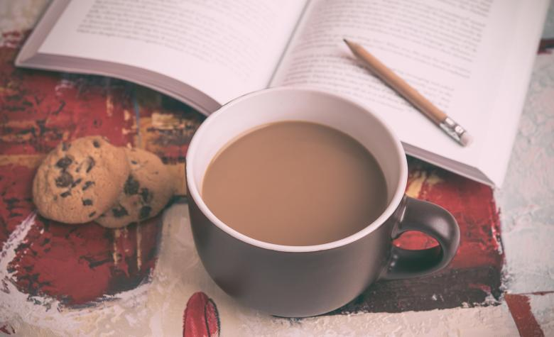

Home
Tea

This is how I make my tea.
Ingredients
- 1 decaf teabag
- 1 cup of boiling water
- 80ml Oatly Barista
Instructions
- Put the teabag in a mug.
- Add the water as soon as it boils and let it brew for 3-5mins.
- Remove the teabag, squeezing firmly.
- Add the Oatly Barista to the mug.